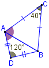
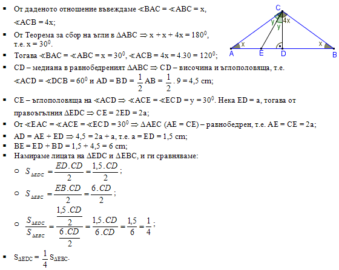
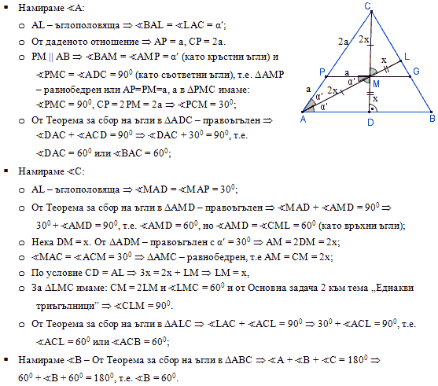

ПЪРВИ МОДУЛ
ЗАДАЧИ С ИЗБИРАЕМ ОТГОВОР
Критерии за оценяване
Верният отговор на всяка задача от 1 до 10 включително се оценява с по 2 точки.
- Ако AOB = 100°, то OAB е равен на:
Проверете отговор
Моля, изберете отговор.
Отговорът е верен.
Вижте решение
- Ако на чертежа за еднаквите ΔABC и ΔDEF са отбелязани съответните елементи. Ъгъл β е:
Проверете отговор
Моля, изберете отговор.
Отговорът е верен.
Вижте решение
- Ако sAB е симетралата на AB, то е вярно, че:
Проверете отговор
Моля, изберете отговор.
Отговорът е грешен.
Упътване: Използвайте
Теорема свойство на симетралите в триъгълник.
Отговорът е верен.
Вижте решение
Решение:
- т. M sAB AM = BM.
- Верен отговор Г).
- В ΔABC AL е ъглополовяща, а CD – височина. Винаги е вярно, че:
Проверете отговор
Моля, изберете отговор.
Отговорът е грешен.
Упътване: Използвайте
Теорема свойство на ъглополовящи в триъгълник.
Отговорът е верен.
Вижте решение
- НЕ е вярно твърдението:
Един триъгълник е равнобедрен, ако:
Проверете отговор
Моля, изберете отговор.
Отговорът е грешен.
Упътване: Използвайте
Теореми признаци на равнобедрен триъгълник.
Отговорът е верен.
Вижте решение
- Ако P = 2b + c е периметърът на равнобедрен триъгълник с основа a и бедро b, то бедрото b се пресмята по формулата:
Проверете отговор
Моля, изберете отговор.
Отговорът е грешен.
Упътване: Решете уравнението спрямо b.
Отговорът е верен.
Вижте решение
Решение:
- P = 2b + b 2b = P – c b = .
- Верен отговор В).
- По даденото на чертежа CAD е равен на:
Проверете отговор
Моля, изберете отговор.
Отговорът е грешен.
Упътване:
- Намерете ъгъл ВАС.
- Намерете ъгъл DАB.
- Намерете търсения ъгъл.
Отговорът е верен.
Вижте решение
Решение:
- AC = BC ΔABC – равнобедрен, т.е. BAC = ABC = α.
- От Теорема за сбор на вътрешни ъгли в ΔABC следва, че α + α + 40° = 180°, т.е. α = 70°.
- По аналогичен начин от ΔABD доказваме, че β = BAD = 30°.
- CAD = α + β = 70° + 30° = 100°.
- Верен отговор A).
- На чертежа отсечката AH е височина през върха А. Ако ACB = 65° и AB = 2BH, мярката на BAC е равна на:
Проверете отговор
Моля, изберете отговор.
Отговорът е верен.
Вижте решение
- В ΔABC точката M е среда на AB, A = 30° и BMC = 60°. Кое от равенствата НЕ е вярно?
Проверете отговор
Моля, изберете отговор.
Отговорът е грешен.
Упътване:
- Докажете, че ΔAMC е равнобедрен.
- Докажете, че ΔABC е правоъгълен.
- Намерете верните равенства и ги изключете от решението на задачата.
Отговорът е верен.
Вижте решение
Решение:
- BMC – външен за ΔAMC MAC + ACM = BMC 30° + ACM = 60° ACM = 30°, т.е. ΔAMC – равнобедрен или AM = CM = a, но това е отговор А), т.е. отговор А) не е решение на задачата.
- По условие т. М е среда на AB BM = AM = CM = a, т.е. ΔMBC – равнобедрен.
- От Теорема – признак (ΔMBC – равнобедрен и BMC = 60°) следва, че ΔMBC е равностранен, т.е. MBC = MCB = BMC = 60°.
- От MCB = 60° и ACM = 30° ACB = 90°.
- В ΔABC имаме: ACB = 90° и A = 30° CB = AB, но това е отговор B), т.е. отговор B) не е решение на задачата.
- ΔABC – правоъгълен и CM – медиана AB = 2CM, но това е отговор Г), т.е. отговор Г) не е решение на задачата.
- Остана да е верен отговор Б).
- На чертежа симетралите sAC и sBC съответно на страните AC и BC се пресичат в точка P. Триъгълник ABC е:
Проверете отговор
Моля, изберете отговор.
Отговорът е верен.
Вижте решение
Критерии за оценяване
Верният отговор на всяка задача от 11 до 16 включително се оценява с по 3 точки.
- На чертежа ΔABC (C = 90°) и AC = BC. Правата m минава през точката C. Ако AM и BN са разстоянията от върховете A и B до правата m, то НЕ е вярно, че:
Проверете отговор
Моля, изберете отговор.
Отговорът е грешен.
Упътване: Докажете, че ΔBCN и ΔCAM са
еднакви.
Отговорът е верен.
Вижте решение
Решение:
- Доказваме, че ΔACM ≅ ΔCBN:
- Нека BCN = x. От теорема за съседни ъгли ACM + ACB + BCN = 180° ACM + 90° + x = 180° ACM = 90° – x.
- От теорема за сбор на вътрешни ъгли в ΔACM ACM + CAM = 90° 90° – x + CAM = 90° CAM = x.
- ΔACM ≅ ΔCBN (по ІІ признак, защото AC = BC, M = N = 90°, CAM = BCN – по доказателство).
- От ΔACM ≅ ΔCBN следва, че:
- AM = CN, но това е отговор В), т.е. отговор В) не е решение на задачата.
- CM = BN, но това е отговор Б), т.е. отговор Б) не е решение на задачата.
- ACM = CBN, но това е отговор Г), т.е. отговор Г) не е решение на задачата.
- Остана да е верен отговор А).
- На чертежа в ΔABC височините AA1 и CC1 се пресичат в точка H и AB = CH. Ако AH = 5 cm и HA1 = 3 cm, то лицето на ΔABC е:
Проверете отговор
Моля, изберете отговор.
Отговорът е грешен.
Упътване:
- Докажете, че ΔABA1 и ΔCHA1 са еднакви.
- Намерете НA1, CA1 и след това ВC.
- Намерете лицето по формулата SΔАВС = .
Отговорът е верен.
Вижте решение
Решение:
- Доказваме, че ΔABA1 ≅ ΔCHA1:
- От ΔABA1 ≅ ΔCHA1 следва, че:
- HA1 = BA1 = 3 cm.
- CA1 = AA1 = 5 + 3 = 8 cm.
- BC = BA1 + CA1= 3 + 8 = 11 cm.
- SΔABC = = 44 cm2.
- Верен отговор А).
- В ΔABC, AB = 2.BC и ABC = 60°. Симетралата на AB пресича страните AB и AC съответно в точките M и N. НЕ е вярно, че:
Проверете отговор
Моля, изберете отговор.
Отговорът е грешен.
Упътване:
- Докажете, че ΔABC е правоъгълен.
- Намерете верните отговори и ги отхвърлете, като използвате:
Отговорът е верен.
Вижте решение
Решение:
- От основна задача 2 следва, че ΔABC е правоъгълен.
- Отхвърляме верните отговори:
- От теорема за сбор на вътрешни ъгли в ΔABC следва, че
BAC + ABC + ACB = 180° BAC + 90° + 60° = 180°, т.е. BAC = 30°, но това е отговор Г), т.е. отговор Г) не е решение на задачата.
- т. М е среда на АВ – по условие и като използваме Основна задача 3 а) доказваме отговор Б), т.е. отговор Б) не е решение на задачата.
- СМ – медиана в правоъгълен ΔABC MBC = CMB = MCB = 60°, т.е.
(1): BM = BC.
От ACB = 90° и BMN = 90° следва, че CMN = 30° и NCM = 30°, т.е.
(2): CN = MN.
От (1) и (2), и от Теорема признак №2 за симетрала на отсечка следва, че BN е симетрала на MC, но това е отговор А), т.е. отговор А) не е решение на задачата.
- Остана да е решение на задачата отговор В).
- На чертежа симетралите на страните AC и AB се пресичат в точка Q и MAN = 48°. Големината на QBC е:
Проверете отговор
Моля, изберете отговор.
Отговорът е грешен.
Упътване:
- Като използвате Теорема свойство на симетрала на отсечка докажете, че ΔCMA, ΔANB, ΔCQB, ΔCQA и ΔAQB са равнобедрени.
- Отбележете ъгъл QBC с х и изразете ъгъл MAN чрез х.
Отговорът е верен.
Вижте решение
Решение:
- т. M sAC CM = AM, т.е. ΔCMA – равнобедрен или MAC = MCA = n.
- т. N sAB AN = BN, т.е. ΔANB – равнобедрен или NAB = NBA = y.
- т. Q лежи на sAC и sAB CQ = AQ = BQ, т.е. ΔCQB, ΔCQA, ΔAQB – равнобедрени QCB = CBQ = x, QCA = CAQ = n + x, QBA = QAB = x + y.
- MAN = MAQ + QAN 48° = x + x, т.е. x = QBC = 24°.
- Верен отговор Б).
- В ΔABC ъглополовящата AL пресича медианата CE в точка N. Ако CN = NE, то НЕ е вярно, че:
Проверете отговор
Моля, изберете отговор.
Отговорът е грешен.
Упътване:
Намерете верните отговори и ги отхвърлете като:
Отговорът е верен.
Вижте решение
Решение:
- Намираме верните отговори и ги отхвърляме:
А) AN – медиана в ΔAEC и от Основна задача 3 а) SΔANE = SΔACN, но това е отговор А), т.е. отговор А) не е търсеното решение на задачата.
Б) ВN – медиана в ΔBEC и от Основна задача 3 а) SΔCNB = SΔBEN, но това е отговор Б), т.е. отговор Б) не е търсеното решение на задачата.
В) Този отговор не може да се докаже.
Г) Нека AC = b. В ΔAEC AN е ъглополовяща и медиана (по условие) ΔAEC (AC = AE = b) – равнобедрен, но по условие CE – медиана в ΔABC BE = AE = b, т.е. AB = 2b = 2AC. Това е отговор Г), т.е. отговор Г) не е търсеното решение на задачата.
- Верен отговор В).
- В правоъгълния ΔABC BAC = 75°. Ако AB = 16 cm, лицето на ΔABC е равно на:
Проверете отговор
Моля, изберете отговор.
Отговорът е верен.
Вижте решение
ЗАДАЧИ СЪС СВОБОДЕН ОТГОВОР
Отговорите на задачи 17. – 20. запишете на съответните места в листа с отговори.
- На фигурата ΔABC и ΔABD са правоъгълни и BAD = 40°, ABC = 25° и точка M е средата на AB. Да се попълнят празните места в текста.
а) Градусната мярка на ABD е ......°.
б) Според страните си ΔBMD е .......... и ΔBMC е .............
в) Градусната мярка на DCM е ......°.
Вижте упътване
Вижте решение
Решение:
а) От Теорема за сбор на вътрешни ъгли в правоъгълния ΔABD получаваме
ABD + BAD = 90° ABD + 40° = 90°, т.е. ABD = 50°.
б) Определяме вида на дадените триъгълници:
- DM – медиана към хипотенузата в ΔABD DM = BM ΔBMD – равнобедрен.
- CM – медиана към хипотенузата в ΔABC CM = BM ΔBMC – равнобедрен.
в) Намираме градусната мярка на DCM.
- ΔBMD – равнобедрен MDB = MBD = 50°.
- От Теорема за сбор на вътрешни ъгли в ΔMBD BMD + MDB + MBD = 180° BMD + 50° + 50° = 180°, т.е. BMD = 80°.
- ΔBMC – равнобедрен MBC = MCB = 25°.
- От Теорема за сбор на вътрешни ъгли в ΔMBC BMC + MCB + MBC = 180° BMC + 25° + 25° = 180°, т.е. BMC = 130°.
- CMD = BMC – BMD = 130° – 80° = 50°.
- DM и CM – медиана към хипотенузата в ΔABD и ΔABC DM = CM = BM, т.е. ΔCMD – равнобедрен DCM = CDM = x.
- От Теорема за сбор на вътрешни ъгли в ΔCMD DCM + CDM + CMD = 180° x + x + 50° = 180°, т.е. DCM = x = 65°.
- Отговор: DCM = 65°.
Критерии за оценяване
а) За верен отговор – 1 точка.
б) 2 точки. За всеки верен отговор – по 1 точка.
в) За верен отговор – 3 точки.
Общо 7 точки.
- В долното твърдени е пропуснато едно условие.
„Ако за ΔABC и ΔDEF е дадено, че AB = EF, BAC = EFD и ............ , то те са еднакви.”
В таблицата са дадени равенствата, които трябва да поставите на празното място и да проверите верността на получените твърдения. В листа с отговори (третата колонка в таблицата) срещу номера на всяко условие запишете „ДА”, ако полученото твърдение винаги е вярно, и „НЕ”, ако невинаги е вярно.
| № |
1 |
2 |
3 |
4 |
5 |
6 |
| Условие |
ABC = EDF |
AC = ED |
BCA = EDF |
ED = BC |
AC = DF |
DEF = ABC |
| ДА/НЕ |
|
|
|
|
|
|
Вижте упътване
Вижте решение
Решение:
Проверяваме всяко от условията с подходящ признак за еднаквост на триъгълници:
- НЕ – Това условие не се изпълнява при нито един от признаците.
- НЕ – Това условие не се изпълнява при нито един от признаците.
- ДА – Това условие се изпълнява при II признак.
- НЕ – Това условие не се изпълнява при нито един от признаците.
- ДА – Това условие се изпълнява при I признак.
- ДА – Това условие се изпълнява при II признак.
Критерии за оценяване
За всеки правилен отговор – по 1 точка.
Общо 6 точки.
- В остроъгълния ΔABC, BAC = 50° и AA1 е височина. Симетралата на AC пресича височината AA1 в точка E, която дели височината AA1 в отношение 2 : 1, считано от върха А. Намерете градусната мярка на CEA1, ACE, ACB и ABC.
Вижте упътване
Вижте решение
Решение:
- От даденото отношение следва, че AE = 2a, EA1 = a.
- ME = sAC и т.Е sAC AE = CE = 2a.
- В правоъгълния ΔECA1 имаме CE = 2a = 2EA1 ECA1 = 30°. Тогава, от теорема за сбор на вътрешни ъгли в ΔECA1 ECA1 + CEA1 = 90° 30° + CEA1 = 90°, т.е. CEA1 = 60°.
- ΔAEC – равнобедрен EAC = ACE = y, но CEA1 външен за ΔAEC y + y = CEA1 = 60°, т.е. y = ACE = 30°.
- ACB = ACE + ECA1 = 30° + 30° = 60°.
- От Теорема за сбор на ъгли в ΔABC получаваме:
BAC + ACB + ABC = 180° 50° + 60° + ABC = 180°, т.е. ABC = 70°.
- Отговор: CEA1 = 60°, ACE = 30°, ACB = 60°, ABC = 70°.
Критерии за оценяване
- За намирането на CEA1, ACE – по 3 точки.
- За намирането на ACB – 2 точки.
- За намирането на ABС – 3 точки.
- Общо 11 точки.
- Симеон направил показаната апликация на лодка, като използвал три еднакви триъгълника, поставени така, че върховете им A, B и C са на една права и FH || AC.
а) Ако BHF = 35° и CBE = 160°, намерете градусните мерки на BAE и BFH.
б) Ако AE = 3 cm, AB = 4 cm и BE = 6 cm, намерете дължините на отсечките AC, EF и DH.
в) Ако периметърът на апликацията е 77 cm, а AC = 17 cm, намерете дължината на отсечката FH.
Вижте упътване
Вижте решение
Решение:
а) Намираме BFH и BAE:
- (FH || AC) ∩ BF BFH + CBF = 180° (като прилежащи ъгли) BFH + 160° = 180° BFH = 20°.
- Прилагаме Теорема за сбор на вътрешни ъгли в ΔBHF:
HBF + BHF + BFH = 1800 HBF + 35° + 20° = 180° HBF = 125°.
- По условие имаме ΔABE ≅ ΔBFH BAE = HBF = 125°.
- Отговор: BFH = 20°, BAE = 125°.
б) От условието ΔABE ≅ ΔBFH ≅ ΔCDB AB = BF = CD, AE = BH = BC, BE = FH = BD.
- AC = AB + BC = AB + AE = 4 + 3 = 7 cm.
- Намираме отсечката EF:
- BF = AB = 4 cm.
- EF = BE – BF = 6 – 4 = 2 cm.
- По подобен начин намираме
DH = BD – BH = BE – AE = 6 – 3 = 3 cm.
- Отговор: AC = 7 cm, EF = 2 cm, DH = 3 cm.
в) Нека AB = BF = CD = a, AE = BH = BC = b, BE = FH = BD = x.
- AB + BC = AC a + b = 17.
- DH = BD – BH = x – b.
- FE = BE = BF = x – a.
- Pапл. = AB + BC + CD + DH + FH + FE + AE = a + b + a + x – b + x + x – a + b = a + b + 3x 77 = 17 + 3x x = 20, т.е. FH = x = 20 cm.
- Отговор: FH = 20 cm.
Критерии за оценяване
а) 2 точки. За всеки вярно намерен корен – по 1 точка.
б) 3 точки. За всеки правилен отговор – по 1 точка.
в) За правилен отговор – 3 точки.
Общо 8 точки.
ВТОРИ МОДУЛ
Отговорите на задачи 21. и 22. запишете на съответните места в листа с отговори.
- Дадени са два правоъгълни триъгълника ABC и ABD с обща хипотенуза АВ = 22 cm и точките С и D са в различни полуравнини спрямо АВ. Ако точка М е среда на АВ и CBD = 30°, намерете периметъра на ΔCDM в сантиметри.
Вижте упътване
Упътване:
- Докажете, че ΔDMC е равнобедрен.
- Докажете, че ъгъл DMC е равен на 60°, т.е. ΔDMC е равностранен.
- Намерете PΔCDM.
Вижте решение
Решение:
- Доказваме, че ΔDMC е равнобедрен:
- DM – медиана в правоъгълния ΔADB (1): DM = BM = AB = 11 cm.
- CM – медиана в правоъгълния ΔABC (2): CM = BM = AB = 11 cm.
- От (1) и (2) следва, че ΔDMC – равнобедрен.
- Доказваме, че ΔDMC е равностранен:
- DM – медиана в правоъгълния ΔADB MDB = DBM = x. Но AMD външен за ΔDMB AMD = MDB + DBM = 2x.
- CM – медиана в правоъгълния ΔABC MBC = MCB = y. Но AMC външен за ΔMBC AMC = MBC + MCB = 2y.
- CMD = AMD + AMC = 2x + 2y = 2(x + y) = 2.30° = 60°.
- ΔDMC – равнобедрен с CMD = 60° ΔDMC – равностранен.
- ΔDMC – равностранен CD = DM = CM = 11 cm.
- PΔCDM = 3CD = 3.11 = 66 cm.
Критерии за оценяване
За верен отговор – 5 точки.
- В ΔABC ъглополовящите AA1 и CC1 се пресичат в точка O така, че AOC = 105°. Да се намери лицето на ΔABC, ако AB = BC = 4 cm.
Вижте упътване
Вижте решение
Решение:
- AA1 и CC1 – ъглополовящи и от Основна задача 2 намираме
AOC = 90° + ABC 105° = 90° + ABC, т.е. ABC = 30°.
- Построяваме ъглополовящата BB1 ABB1 = 15°, но ΔABC – равнобедрен BB1 е и височина, т.е. ΔABB1 и ΔBB1C са правоъгълни.
- BB1 – медиана и от Основна задача 5 лицето на ΔABB1 е равно на лицето на BB1C, т.е. за да намерим SΔABC достатъчно е да намерим лицето на ΔABB1:
- Построяваме B1E AB.
- В правоъгълния ΔABB1 ABB1 = 15° тогава от Основна задача 3 B1E = AB = . 4 = 1 cm.
- SΔABB1 = = 2 cm2.
- SΔABC = 2 SΔABB1 = 2.2 = 4 cm2.
Критерии за оценяване
За верен отговор – 5 точки.
На задачи 23. и 24. запишете пълните решения с необходимите обосновки.
- В равнобедрения ΔABC с основа AB = 9 cm отношението на ъглите при върховете A и C е 1 : 4. Ако точка D е среда на основата AB, а CE (E AB) е ъглополовяща в ΔACD да се определи каква част е лицето на ΔEDC от лицето на ΔEBC.
Вижте упътване
Упътване:
- От даденото отношение намерете ъглите на ΔABC.
- Докажете, че ΔAEC – равнобедрен, а ΔEDC – правоъгълен с ъгъл 30° и намерете ЕD.
- Намерете лицата на ΔEDC и ΔEBC, и ги разделете.
Вижте решение
Решение:

Критерии за оценяване
По 2 точки: за намиране ъглите на ΔABC; за доказване, че ΔAEC – равнобедрен; за доказване, че ΔEDC – правоъгълен с ъгъл 30°; за намиране на ЕD; за намиране на търсеното отношение.
Общо 10 точки.
- За ΔABC са построени височината CD (D AB) и ъглополовящата AL (L BC), които се пресичат в точка М. Ако AL = CD и права през М, успоредна на АВ, пресича AC в точка P така, че PC = 2PA. Намерете ъглите на ΔABC.
Вижте упътване
Упътване:
- Докажете, че ΔAPM – равнобедрен.
- Докажете, че ΔPMC е правоъгълен с ъгъл 30°.
- Докажете, че ΔAMD е правоъгълен с ъгли 30° и 60°.
- В ΔMLC намерете ъгъл 60° и CM = 2ML, и използвайте Основна задача 2, за да докажете, че той е правоъгълен.
- От Теорема за сбор на ъгли в ΔALC и ΔABC намерете ъглите при върховете С и В.
Вижте решение
Решение:

Критерии за оценяване
По 2 точки: за доказване, че ΔAPM – равнобедрен; за намиране ъглите на ΔPMC; за намиране ъглите на ΔAMD; за доказване, че ΔMLC – правоъгълен; за намиране ъглите при върховете С и В.
Общо 10 точки.